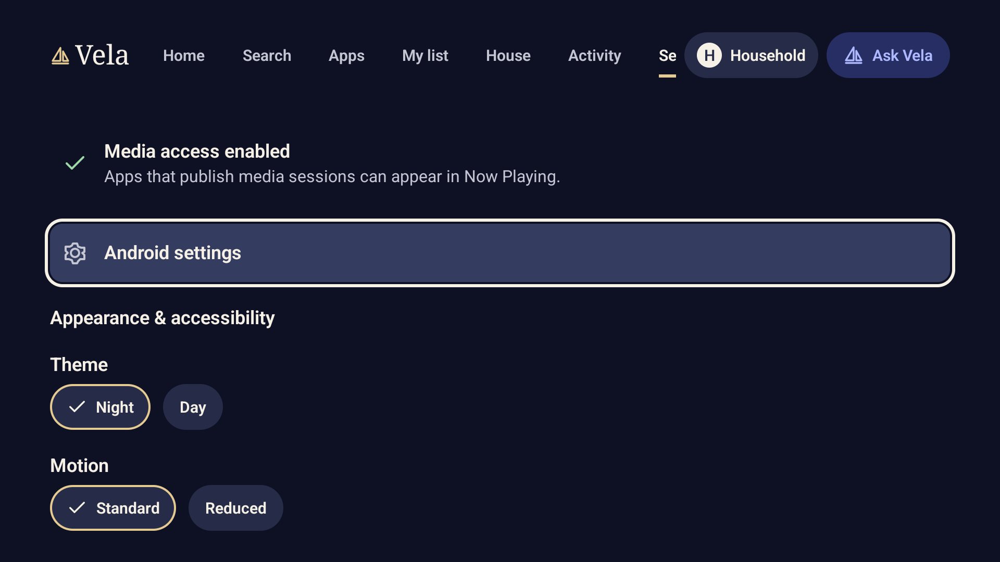
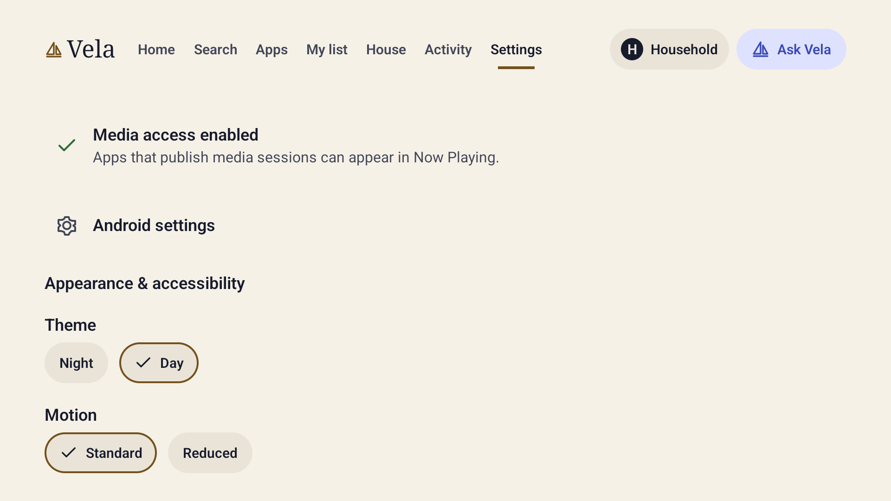
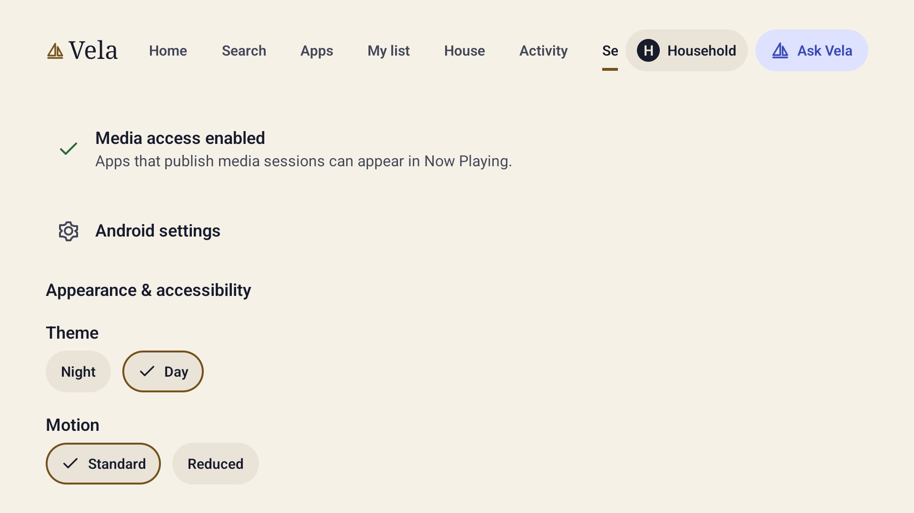
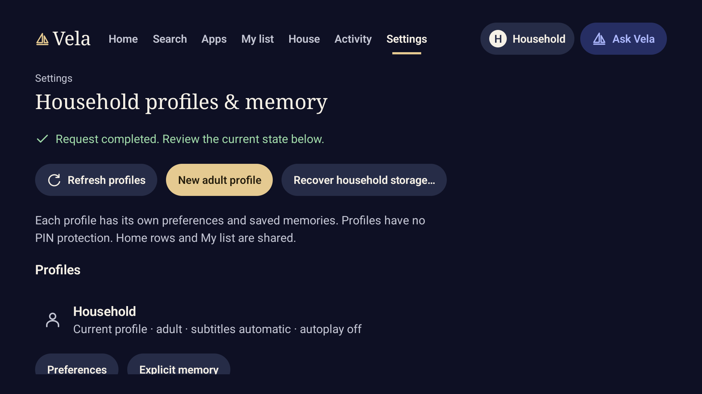

Corrected · Settings · Night. The selected Settings label is fully readable.

Original · Settings · Night. Actual capture before the visual corrections.

Corrected · Settings · Day. Day selected through the actual running application.

Original · Settings · Day. Actual capture before the visual corrections.

Corrected · Refresh feedback · Night. After an explicit read-only refresh, completion feedback remains visible.
These controls compare screenshots, not a simulated TV app. The four recorded visual issues are corrected. Populated media, playback, approvals, high contrast, large text and full input acceptance still need coverage.